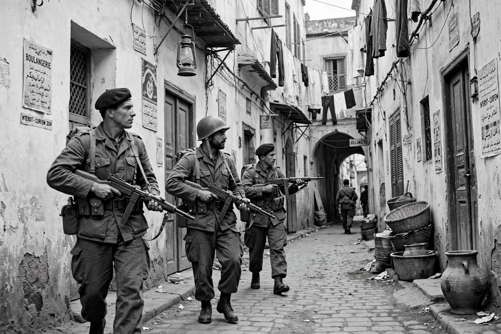

| Battle of Algiers | |
 French paratroopers in the Casbah, 1957 | |
| Date | 30 September 1956 – 8 October 1957 |
|---|---|
| Location | Algiers, French Algeria |
| Result | French military victory; FLN political and strategic success |
| Belligerents | France; FLN (National Liberation Front) |
| Commanders | Jacques Massu; Raoul Salan — Saadi Yacef; Larbi Ben M'hidi; Ali La Pointe |
The Battle of Algiers was a campaign fought during the Algerian War (1954–1962) between the French military and the National Liberation Front (FLN). It took place in Algiers, the capital of French Algeria, between September 1956 and October 1957. The FLN's Algiers network, the Autonomous Zone of Algiers led by Larbi Ben M'hidi and Saadi Yacef, carried out a campaign of bombings and assassinations against French and pied-noir targets. In response, the French government granted sweeping police powers to General Jacques Massu's 10th Parachute Division, which dismantled the FLN network through mass arrests, raids, and the systematic use of torture.
The Algerian War began on 1 November 1954 with coordinated FLN attacks. By 1956 the FLN decided to bring the war to the capital. On 30 September 1956, three female FLN operatives — Zohra Drif, Samia Lakhdari, and Djamila Bouhired — planted bombs in French cafés and an Air France office in the European quarter, killing several civilians and opening the battle.
In January 1957 the FLN called an eight-day general strike timed to coincide with a United Nations debate on Algeria. Resident-General Robert Lacoste handed full police powers in Algiers to General Massu. Paratroopers broke the strike, occupied the Casbah, and set up a grid of checkpoints and informants. Massu's troops arrested thousands of suspects; interrogation centres became notorious for torture, including water torture and electric shocks. Ben M'hidi was captured in February 1957 and died in custody — officially by suicide, though later accounts acknowledged he was killed. The FLN network was progressively rolled up; Ali La Pointe, the last military chief of the zone, was killed on 8 October 1957 when French troops blew up his hideout in the Casbah. By late 1957 the FLN's urban organisation in Algiers had been destroyed.
Tactically the battle was a French victory, but the revelation of systematic torture — publicised by works such as Henri Alleg's La Question (1958) — badly damaged France's standing at home and abroad and strengthened international sympathy for Algerian independence. Algeria became independent in 1962 under the Évian Accords. The battle was famously depicted in Gillo Pontecorvo's 1966 film The Battle of Algiers, shot in a documentary style and long used as a reference work on urban guerrilla warfare and counter-insurgency.